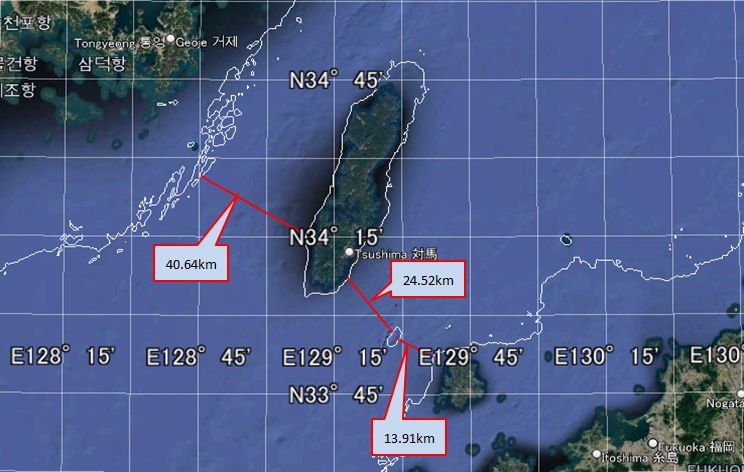
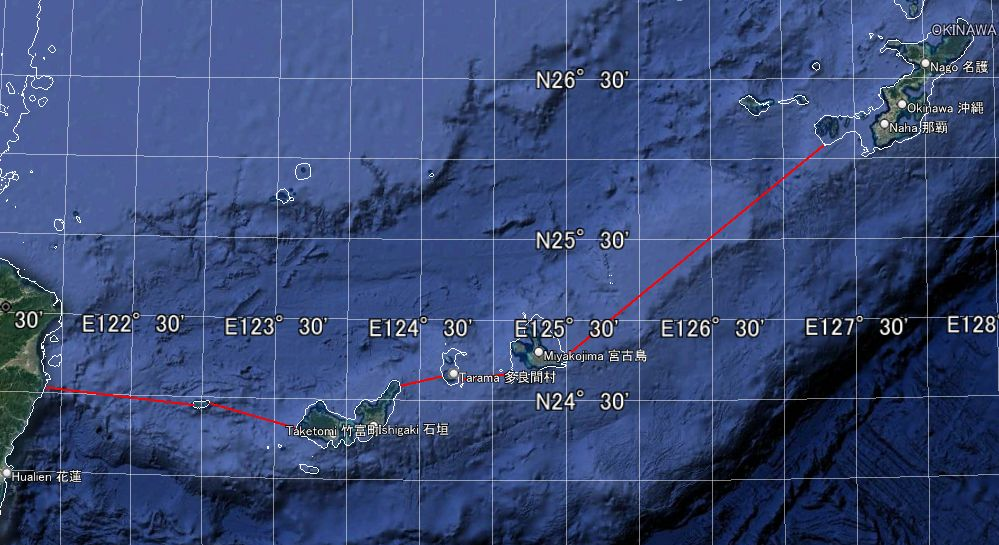

Voyagers of 38,000 years ago
I recently watched a YouTube with the following title. Google Maps shows a map of Japan 20,000 years ago, amazing use... -[1] . It is not a direct display on google map, Imagine that 20,000 years ago, the elevation was about 140 m lower than today, and the continental shelf was visible on the surface of the earth... I remember it was something like that. It was quite an out-of-the-box explanation, but I thought it was an interesting idea.
By the way, more than ten years ago, I remember reading an article about obsidian being transported by boat from Kōzu-shima in the Izu Islands to the Izu Peninsula and the Boso Peninsula before the Jōmon period .
My wife read the article in the newspaper and told me, "Wow, that's amazing, obsidian was being transported by boat from Kōzu-shima Island to Izu and Boso a long time ago." I read the article she gave me. I don't remember the details, but I think it said that tens of thousands of years ago, obsidian was transported from Kōzu-shima to all parts of Japan by boat. At the time, I took it with a grain of salt [Note 1], but for some reason, it just stuck in my mind.
When I saw Google Maps shows a map of Japan 20,000 years ago, amazing use... [1] I thought that perhaps the obsidian from Kōzu-shima was transported without the use of boat during a time when the island's sea level was lower.
To clear my mind of lingering doubts, I started researching, beginning with "Kōzu-shima" and "obsidian". And so my adventure began.
1. The era is 38,000 years ago
When I searched for "Kōzu-shima obsidian", a lot of websites came up whose content included the strings 37,500 years ago or 38,000 years ago [Note 2]. The keyword 38,000 years ago suggests that obsidian excavated from ruins dating back about 38,000 years ago came from Kōzu-shima, and has apparently been excavated from ruins all over Japan.
Here are some websites for reference.
Kōzu-shima Stone Warehouse Official Website | The power of Kōzu-shima ...
I love "stones" so much that I moved to an island and "never get bored" with my life...
I realized that the period I vaguely remembered as tens of thousands of years ago was in fact 38,000 years ago. And I began to understand that the article I had read in the newspapers were true.
2. The obsidian was transported by boat [Note 3]
I added "voyage" to the search to see if there were any more detailed sites. Then "The world's oldest round-trip voyage - researchmap -[2]" caught my eye. When I clicked on it, instead of jumping to a web page, a PDF was downloaded. In a feature article in Iwanami Shoten's "Science" by Nobuyuki Ikeya of the Meiji University Obsidian Research Center, he detailed his theory, based on scientific evidence, that obsidian was transported to the Izu Peninsula by boat 38,000 years ago.
According to Ikeya [2], 38,000 years ago was a relatively warm time even in the late Paleolithic period, and the sea level was about 80m lower than it is today. However, even if it is 80 meters lower, there is a gap between Kōzu-shima and Izu Peninsula. It has been pointed out that the water depth reaches 800 meters in some places, and obsidian had to be transported by boat.
I actuallyopened Google Maps with reference to You can use Google Maps to see a map of Japan from 20,000 years ago, an amazing way to use it... [1]. Google Maps shows the depth of the ocean using gradations to some extent. All I could tell from the map was whether the area looked deep or shallow. Even looking at Google Maps, I couldn't imagine what it was like when the sea level was 80m lower than it is today. I also looked it up in "Google Earth Pro", but got the same result. However, I learned that "Google Earth Pro" can display contour lines if the appropriate data is imported. If we know the above sea level in the past, we may be able to recreate the coastline at that time by plotting it with contour lines [Note 4].
I would like to find out what the geographical situation was like at the time, I searched for sites that provided current depth contour and historical changes in above sea level.
For changes in above sea level, I retrieved the data from NOAA (National Oceanic and Atmospheric Administration) Paleoclimatology -[3].
The data sources we obtained are as follows: This file records sea level data in millennia increments from 9 million years ago to the present.
The chart below plots above sea level from 42,000 years ago to the present based on Miller's data.

Fig.2-1 : Above sea level from 42,000 years ago to the present
The two light blue and light green bands will be explained in "5. Did the voyagers continue to remain in Japan artipelago?" and "3. 20,000 years ago, sea level was 120 meters lower than it is now".
I accessed the GEBCO(The General Bathymetric Chart of the Oceans) data download site and obtained data for the ocean area I would like to. However, I couldn't import this data into Google Earth Pro, so I installed the desktop version of QGIS, a Geographic Information System, from the QGIS download site and converted it into data that could be imported into Google Earth Pro. In QGIS, I created three datasets for depths of 80m, 120m, and 140m, and imported them into Google Earth Pro.
The following figure shows the area including the Izu Peninsula, Kōzu-shima Island, and the Boso Peninsula when the sea level was 80m lower. The white contour lines around the land indicate that this was land at that time. We can see that the land area was larger 38,000 years ago than it is today [Note 4].

Fig.2-2 : The area including the Izu Peninsula, Kōzu-shima Island, and Boso Peninsula 38,000 years ago
As can be seen from Fig.2-2 , at that time Kōzu-shima was connected to a small island to the west. It is known that obsidian was produced in this area, which is now called "Onbase Island."
Even if the sea level were 80m lower than it is today, the distance between Kōzu-shima and the Izu Peninsula would still be just under 40km even at its shortest distance. This shows that boats were essential to transport obsidian.
Ikeya's feature article [2] on this transportation route describes the influence of ocean currents and states that advanced navigation skills were required to operate the boats. In particular, he emphasizes the fact that round-trip voyages were made from the Izu Peninsula to Kōzu-shima and from Kōzu-shima to the Izu Peninsula.
By the way, what was the situation in Japan 38,000 years ago? According to Masami Izuho of Tokyo Metropolitan University, in his article Who were the first modern humans to migrate to the Japanese archipelago? ,
The oldest ruins in the Japanese archipelago appeared 38,000 years ago.
In addition, ruins dating back 38,000 years are found over a wide area from Tohoku to the Ryukyu Peninsula,
so it is safe to say that modern humans definitely colonized the Japanese archipelago at this time.
Ikeya also stated [2] the following in his special paper:
...It dates back to about 38,000 years ago. When modern humans arrived in the archipelago,
This roughly coincides with the beginning of the Upper Paleolithic period.
In other words, almost at the same time as they expanded to the archipelago,
This meant that they were making a round-trip voyage between the Izu Peninsula and Kōzu-shima.
Here I would like to show you a map of Japan and its surrounding areas from 38,000 years ago.

Fig.2-3: Map of Japan and its surrounding areas 38,000 years ago
The area within the -80m white contour line was land at that time. It also shows the route that humans are believed to have taken to reach the Japanese archipelago.
Regarding Soya Channel - ②, Hokkaido and Sakhalin are connected by land, and Sakhalin is connected to the continent. However, Hokkaido and Honshu are separated by the Tsugaru Channel - ③.
On the other hand, the Chishima Islands - ① and the [Taiwan - Ryukyu Islands] route - ⑤ can be seen to be separated by the sea almost on an island-by-island basis. The [Korean - Tsushima Island - Kyushu] route - ④ is also firmly separated by the sea.
If we focus on transporting obsidian from Kōzu-shima, You can see that all routes to reach the Izu Peninsula require the use of boats. Assuming they reached the Izu Peninsula by boats, I think this narrows it down to the following three routes.
I think that they crossed the Tsugaru Channel - ③ by boat after crossing the channel via the Chishima Islands route - ① or the Soya Channel route - ② to Hokkaido. I think route ② is the natural way to reach Hokkaido without using a boat.
Fig.2-4 shows two routes across the Tsugaru Channel. Each route is about 11 to 13 km long.

Fig.2-4 : Route across the Tsugaru Channel
[Korea - Tsushima - Kyushu] route - ④ is just over 40km from Korea to Tsushima at its shortest. After that, it goes to Kyushu via a point that is thought to have been an island at the time. The first 40km is a considerable distance, but since the distance between Kōzu-shima and the Izu Peninsula is about 40km, it may not have been a problem for the navigators who made the round trip voyage.

Fig.2-5 : [Korea - Tsushima - Kyushu] route
[Taiwan - Ryukyu Islands - Kyushu] Route - ⑤ is obviously the most difficult route. Even Yonaguni Island in the Ryukyu Islands, the closest island to Taiwan, is over 100km away.
Fig. 2-6 shows the route [Taiwan - Ryukyu Islands]. I've omitted the distances between the islands because they are too great, but it's over 200km from Miyako Island to the main island of Okinawa.

Fig.2-6 : [Taiwan - Ryukyu Islands] route
So far, we have examined the routes taken by voyagers who reached the Japanese archipelago by boat 38 000 years ago. The routes considered easier to cross by boat are ③, ④ and ⑤, in that order.
However, Yosuke Kaifu, who was head of the Human History Research Group in the Department of Anthropology at the National Museum of Nature and Science (and is currently continuing his research at the University Museum, The University of Tokyo), conducted a demonstration experiment of the route from Taiwan to Yonaguni Island in "A thorough recreation of the great voyage to the Japanese archipelago 30,000 years ago using materials and tools from that time -[4]", and succeeded in July 2019. The demonstration experiment involved building a boat using only tools thought to be available at the time and traveling on it.

Fig.2-7 : Quoted from "A thorough recreation of the great voyage to the Japanese archipelago 30,000 years ago, using materials and tools from that time"
Furthermore, Kaifu states the following in
"Humans are a mysterious existence - Why an anthropologist is taking on the 'voyage 30,000 years ago' -[5]":
The first known route to reach Japan was the 'Tsushima Route',
which went from the Korean Peninsula via Tsushima to northern Kyushu around 38,000 years ago.
This was followed by the 'Okinawa Route' (approximately 35,000 years ago),
which traveled north from Taiwan through the Ryukyu Islands,
and the 'Hokkaido Route' (approximately 25,000 years ago),
which traveled south from the north of the continent through Sakhalin to Hokkaido.
I have not been able to follow Kaifu's identification of the dates [5] any further, but according to Kaifu's analysis[5] , the voyagers who arrived in Japan 38,000 years ago would have followed [Korea - Tsushima Island - Kyushu] route - ④ .
Here, I would like to quote Ikeya's feature article [2] again.
...it dates back about 38,000 years.
This roughly coincides with the time when modern humans arrived in the archipelago
and the start of the Late Paleolithic period.
In other words, they were making round trip voyages
between the Izu Peninsula and Kōzu-shima Island at almost the same time as
they were spreading out into the archipelago.
Taking all of this into consideration, it would appear that 38,000 years ago, voyagers traveled to Japan via [Korea - Tsushima Island- Kyushu] route - ④, and at roughly the same time, they were making round trip voyages between the Izu Peninsula and Kōzu-shima. It seems reasonable to assume that navigators who were able to cross the 40km distance between South Korea and Tsushima would have been able to make a round-trip voyage between Izu Peninsula and Kōzu-shima.
In my personal opinion, materials like obsidian that can be made into sharp tools, I believe it was extremely valuable at the time. I imagine that people skilled in navigation came to the Japanese archipelago in search of such materials.
3. 20,000 years ago, avobe sea level was 120 meters lower than it is now
At the beginning of this page, I mentioned that what prompted me to research ancient voyagers was watching a YouTube video called "Google Maps shows a map of Japan 20,000 years ago, amazing use..." [1] . The video explains that above sea level 20,000 years ago was 140m lower than today. In Figure 2-1: Sea level from 42,000 years ago to the present, which plots past sea levels, we can see that above sea level from 20,000 to 18,000 years ago (light green band) was 120m lower than today. The graph I have posted is just only one piece of data I have obtained from NOAA [3] . There may be archived data that shows above sea level at that time to be 140m.
Fig.3-1 is a map of all of Japan and its surrounding areas when above sea level was 120m lower than it is now.

Fig.3-1 : A map of Japan and its surrounding areas 20,000 years ago, the above sea level was 120m lower than now
Fig.3-2 is a map of Japan and its surrounding areas when above sea level was 140m lower than it is now. It is included here for comparison with when the above sea level was 120m lower.

Fig.3-2 : A map of Japan and its surrounding areas 20,000 years ago, the above sea level was 140m lower than now
At first, there didn't seem to be much difference between if the avobe sea level was 120m lower and if it was 140m lower, but I noticed that if it was 140m lower, the Tsugaru Channel would become connected to the land. Kaifu wrote that the Tsugaru Channel was crossed 25,000 years ago [5] . As shown in Fig. 2-1 (Above sea level from 42,000 years ago to the present) , the avobe sea level 25,000 years ago was 106m lower than now, so even taking into account the 20m width, it is estimated to be between 106m and 126m. According to Kaifu's theory [5] , boats would have been used to cross the Tsugaru Strait. However, it is thought that the distance was such that the opposite shore could be seen just ahead.
From here on, I would like to proceed under the assumption that avobe sea level was 140m lower 20,000 years ago. When above sea level was 140m lower, we can see that the Sea of Japan became a huge lake. At that time, there was a route from the continent to Japan via [Sakhalin - Hokkaido - Honshu], and an easy route to Kyushu was also open from Korea or further south.
In Google Maps shows a map of Japan 20,000 years ago, amazing use... [1] , it is explained that Humans did not need boats to cross over to the Japanese archipelago, but instead traveled overland. Indeed, 20,000 years ago they could have walked across.
Looking at Fig. 2-1 (Above sea level from 42,000 years ago to the present), we can see that sea level dropped almost linearly from 38,000 years ago to 20,000 years ago. Around 20,000 years ago this coincides with Last Glacial Period. It is likely that many people came to Japan from the continent during this period.
The "Paleolithic Sites in the Japanese Archipelago" of the Japanese Palaeolithic Research Association (JPRA) allows you to trace data on sites from 35,000 years ago to 10,000 years ago.
By the way, I have a concern about the passage in
Ikeya's "The World's Oldest Round-Trip Voyage - researchmap"[2] .
Below is the quote.
The supply of obsidian from Kōzu-shima to the Chubu and Kanto regions,
beginning at the Idemaruyama site, spanned a period of about 5,000 years,
from 38,000 to 34,000 years ago.
During the Jōmon period, obsidian from Kōzu-shima Island was excavated again from sites in various places.
The following is a quote from
The fission track ages of obsidian from Kōzu-shima and Onbase Island, Tokyo and from Sanukasaki Island.
during the Jōmon period, many obsidian artifacts from Onbase Island,
such as stone hoes and unfinished products, were discovered in
the Izu Islands and southern Kanto and Tokai regions.
However,
Wikipedia's page states that the Jōmon period began about 14,000 years ago.
This means that no obsidian has been transported from Kōzu-shima for nearly 20,000 years.
I tried to trace this blank 20,000 years, but I couldn't find any relevant web pages.
Below are some of the pages that were found when searching for "Kōzu-shima obsidian voyage 20,000 years ago".
20,000 years ago, Kōzu-shima was the centre of the Kuroshio Cultural Zone
In
A new sea route revealed by obsidian analysis
- Searching for the oldest Paleolithic culture in the Japanese archipelago ④-,
it is written that
during the Paleolithic period about 18,000 to 20,000 years ago,
obsidian from Kōzu-shima Island, one of the Izu Islands in the Pacific Ocean,
was used at sitess on the Musashino Plateau (Suzuki 1971ab)
,
but I could not go any further.
From a different perspective,
there is the page that considers why obsidian was not transported from Kōzu-shima to Honshu
around 20,000 years ago.
In Rinko_Helios's
When did Kōzu-shima obsidian come to the mainland?
= A question that suddenly arose at the Late Paleolithic Tanamukaihara Site =,
the answer to the question
Why was there no obsidian from Kōzu-shima at the Tanamukaihara Site from 20,000 years ago?
(personal working hypothesis)
It's not a difference in location (Ashitaka foothills vs Sagamihara),
but a difference in time (20,000 years ago vs 34,000 years ago).
20,000 years ago was the coldest period of the last glacial period,
and the average temperature was 6 to 7 degrees lower than today.
As a result, the risk of shipwrecks increased,
and shuttle voyages to Kōzu-shima to obtain obsidian were abandoned (scaled down).
I found this to be very interesting.
However, this is an event that took place over several thousand years,
and I think it would be difficult to explain the 20,000-year gap.
Thus, it appears that explaining the 20,000-year gap will be quite difficult. I look forward to future developments in archaeology.
4. Homo sapiens was not the only species until 40,000 years ago
Regarding the voyagers
who transported obsidian from Kōzu-shima to the Izu Peninsula by ship 38,000 years ago,
Ikeya states in
The world's oldest round-trip voyage - researchmap - [2],
...it dates back about 38,000 years.
This roughly coincides with the time when modern humans arrived in the archipelago
and the start of the Late Paleolithic period.
He considers the voyagers to be modern humans without specifying their species.
Meanwhile, Kaifu In "Humans are mysterious beings - Why a human evolutionist takes on the - voyage 30,000 years ago -"[5], he states the following.
Before the age of Homo sapiens, there were many different species of early humans and
archaic humans in Asia.
However, in this day and age, we are the only ones left, Homo sapiens. We are a mysterious existence.
Then, as to the purpose of the experimental voyage, he states,
Because early humans and archaic humans could not cross the vast oceans.
Only Homo sapiens have made serious advances into the ocean.
So what abilities did they have that enabled them to cross the ocean?
To find out, we need to actually build a boat
using as much of the technology of the time as possible and try to cross it.
He considers that the first humans to cross the Japanese archipelago were Homo sapiens.
While researching the humans who came to the Japanese archipelago, I came across an article in National Geographic called "How a molar, jawbone, and pinkie are rewriting human history. "
The article states that the conventional wisdom—that Homo sapiens are the last human species on Earth and that they evolved without intermingling with other human species when they spread out of Africa—has been significantly challenged. The results of DNA analysis of molars, jawbones, and little fingers excavated at various sites are seriously shaking up the conventional image of Homo sapiens.
It shows that everyone today has Neanderthal genetic information and also explains the fact that other human genetic information is stored in our bodies.
The following is an arrangement based on the transition map used in the article, showing the route of spread of Homo sapiens to Europe and Asia, which is believed to have begun 70,000 years ago[Note 5] .
Fig.4-1 : Spread of Homo sapiens to Europe and Asia
The "●" mark in the figure indicates the location where bone fragments of humans different from Homo sapiens were discovered.
The article explains that some of the bone fragments discovered were capable of DNA analysis, and that Homo sapiens spread to various regions while intermingling with other human species.
Fig.4-1 shows the routes by which Homo sapiens reached the Japanese archipelago, including the [Sakhalin - Hokkaido] route and the [Korea - Tsushima Island - Kyushu] route.
Kaifu [5] said the [Sakhalin - Hokkaido] route is estimated to be 25,000 years old, while the [Korea - Tsushima Island - Kyushu] route is thought to be 38,000 years old.
This page is examining the voyagers who transported obsidian from Kōzu-shima Island to the Izu Peninsula 38,000 years ago. Therefore, the [Korea - Tsushima Island - Kyushu] route in Fig. 4-1 is important. By following the transition map, it becomes possible that they may have passed through the "Denisova Cave" in the Altai Mountains.
DNA analysis of bones found in the Denisova Cave has revealed that modern humans have inherited that DNA, as reported by National Geographic in "Multiple lines of mysterious ancient humans interbred with us -[6]". This human species is called "Denisovans" because it was found in the Denisova Cave.
The "●" in Figure 4-1 shows the "Baishigai Karst Cave" and "Cobra Cave." The "Baishigai Karst Cave" is located in Tibet, and the "Cobra Cave" is in the mountains of Laos. Bone fragments excavated from these caves have also been identified as Denisovan.
The article speculates that the people currently living in Papua New Guinea and Melanesia have significant Denisovan DNA. To reach these areas, the Denisovans would need to have been voyagers. It was thought that the Denisovans became extinct 40,000 years ago, but recent research suggests that it may have been "15,000 years ago."[6] This meant that the Denisovans had spread to various parts of Asia.
This is just my personal opinion...
Isn't it also possible that the first humans to come to the Japanese archipelago were Denisovans?
Even if the humans who crossed into the archipelago were Homo sapiens, I think they were not Homo sapiens who left Africa and evolved without interbreeding with other human species, but rather those who evolved while interbreeding with other human species in various parts of Asia. Is that too much of a leap?
5. Did the voyagers continue to remain in Japan artipelago?
What happened after to the voyagers who transported obsidian between Kōzu-shima and the Izu Peninsula starting 38,000 years ago?
Ikeya states the following in
The World's Oldest Round-Trip Voyage - researchmap [2] .
The supply of obsidian from Kōzu-shima to the Chubu and Kanto regions, which began at the Idemaruyama site,
stretched over a period of about 5,000 years, from 38,000 to 34,000 years ago.
It corresponds to the light blue band in Fig. 2-1: Above level from 42,000 years ago to the present. During this period the above sea level was about 80 to 90 meters lower than it is today, but Kōzu-shima and the Izu Peninsula were never connected to each other.
The fact that voyagers continued to transport obsidian from Kōzu-shima to the Izu Peninsula for approximately 5,000 years is an incredibly long period of time when viewed from the perspective of our current time span.
However, in Chapter 2 I present the question as a period of mystery because I cannot find any record of obsidian from Kōzu-shima being brought to any part of Japan during the 20,000 years from 34,000 to 14,000 years ago.
Kaifu [5] states that the first humans arrived in the Japanese archipelago 38,000 years ago, via the route [Korea - Tsushima - Kyushu].
He states that the next human arrival in the archipelago occurred 35,000 years ago, via the [Taiwan - Ryukyu Islands - Kyushu] route.
This was about 1000 years before the transportation of obsidian from Kōzu-shima stopped. It is likely that humans who came from the [Taiwan - Ryukyu - Kyushu] route encountered humans who came from the [Korea - Tsushima - Kyushu] route somewhere.
Here is what I thought of as scenarios after the encounter.
- The humans who arrived later wiped out the humans who had come earlier/li>
- The humans who arrived later interbred with the humans who had come earlier
In the first scenario, the humans who arrived later were unable to learn about the obsidian from Kōzu-shima that the earlier humans knew about, and so transportation declined.
In the second scenario, as earlier and later humans interbred, various information was shared. In the process, if the demand for obsidian from Kōzu-shima decreased, transportation would have declined.
According to Kaifu [5] , humans came to the archipelago via the Hokkaido route 25,000 years ago. Then, during the last ice age (20,000 to 18,000 years ago), it became possible for various human groups to migrate from the continent to the Japanese archipelago via multiple routes.
Considering that Denisovan DNA has been passed down to us today, I can't help but feel that the DNA of the first voyagers who came to the Japanese archipelago has also been inherited through generations to the present day.
== Note ==
[1.]
The article mentioned that the type of stone was obsidian, but at the time, I imagined heavy rectangular stones like marble or granite, quarried from stone pits. Why would they go out of their way to transport such heavy stones from Kozushima to Honshu?
Even if there was a need for that, it would have required a considerably large boat to carry them. I thought there was no way such large boats could have existed in the Stone Age, which was far earlier than the Jomon period.
However, evidence continued to emerge, showing that obsidian was being transported around 38,000 years ago.
Most of the articles I looked into also included explanations about obsidian. Since I had been imagining large, heavy stones, I initially skimmed over the explanations about obsidian.
It wasn't until I went back and re-read those pages that I noticed they explained obsidian was used to make arrowheads and blades.
I had made a significant misunderstanding.
To begin with, how could stones have been extracted during the Stone Age?
So, I decided to research more about obsidian. What I found was that, unlike marble or granite, obsidian is not a stone that can be quarried in large quantities from stone pits. Since only a very small amount of obsidian could be obtained through mining, it was feasible to transport it using the boats of that time.
[2.]
Note that the search was primarily performed in Japanese.
[3.]
I don't have detailed knowledge about (ship, boat). I think "ship" refers to something large, and "boat" refers to something small. That's about it. What did ships look like 38,000 years ago?
In Kaifu's article, A thorough recreation of the great voyage to the Japanese archipelago 30,000 years ago using materials and tools from that time[4], he wrote about his experimental voyage from Taiwan to Yonaguni Island in a "dugout canoe" made from a hollowed-out log.
Ikeya [2], who also participated in Kaifu's project [4] , In the introduction of the members of the thorough reconstruction project of the voyage 30,000 years ago, A photo of him operating a "sea kayak" is featured.
On this page, I would like to refer to the means of transport used by voyager as a "boat". Think of this term as reference to "dugout canoe" or a "kayak".
[4.]
It is certain that there have been various tectonic movements between 38,000 years ago and the present. Therefore, the question arises as to whether the Japan of that time can be replaced with the Japan of today. I did some research on websites that write about the origins of the Japanese archipelago, but there are various theories, ranging from 100,000 years ago to 20,000 years ago, and I was unable to narrow it down. Please note that the diagram presented here is based on the present-day Japanese archipelago, with contour lines added.
[5.]
In fact, it is known that about 74,000 years ago, "the largest volcanic eruption in the past 100,000 years" occurred on the Indonesian island of Sumatra. Currently, there is a lake on Sumatra that is 100 kilometers long and 30 kilometers wide. This lake is the world's largest caldera lake, created by the Toba volcano, which erupted 74,000 years ago. This volcanic eruption caused tremendous damage to the Earth, and there are theories suggesting that “90% of humanity perished" and that“only 4,000 people survived." This major eruption is thought to have had a major impact on Homo sapiens, who left Africa about 70,000 years ago and advanced into Europe and Asia, as well as on human species who were already living in Europe and Asia. Isn't it possible to think that each human species started migrating in search of a place that was a little better to live in?